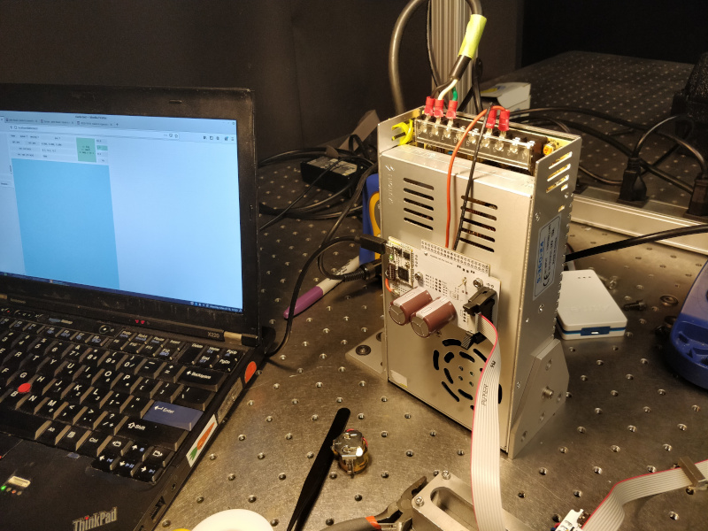
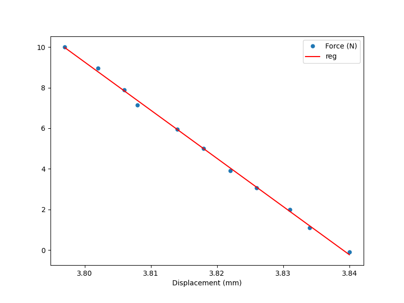

Sharpened Bolt Trials
The machine lives! I wired up a handful of steppers using Jake's controller boards and rigged up a sharpened bolt to make some test scratches on a piece of aluminum scrap:Note the dramatic acceleration of each stroke; I didn't scale this parameter down to account for the far lighter toolhead as compared to Clank. It makes the system appear quite heavy, almost like an old shaper.
Machine Control
A great deal of credit goes to Jake and his Clank project, a fabricateable desktop mill he designed for fab class last semester. He offered up a handful of his latest controller boards along with a few meters of ribbon cable and various connectors, which I graciously accepted and mounted onto my NEMA 14 steppers:Since I don't have a spindle or much need for current, I skipped his ESC board and bolted the head PCB directly onto a 24 VDC power supply, which I then bolted down to the optical table:

Not all was peachy, unfortunately. Jake's contract manufacturer (un)helpfully installed the TVS diodes backwards, resulting in a bit of magic smoke (shown here plugged into Dave's Clank for early testing):
I stripped the diodes off the boards, updated the firmware with proper addresses, and flashed the modules. Getting the code running took a bit of debugging, but Jake was quite helpful and motors were spinning soon enough. I routed ribbon cable around the machine's perimeter and strung GT2 timing belts around the umbrella linkages. I was excited to make things move, so I quickly tensioned everything up and sharpened a bolt:
The bolt is cantilevered over the work surface using a pile of optical table bits, and the height can be precisely adjusted using a micrometer:
I wrote a few lines of GCode to freeze one stepper while advancing the other two, then increment the first and repeat a dozen or so times. This produces a series of arcs:
Spacing is around 0.17 mm. Not bad for a sharpened bolt:
Stage Stiffness
It is worth quantifying the machine stiffness beyond pushing on the stage and saying "oh wow that is actually pretty good". To do this, I used a handful of optical table parts to mount a 5 kg load cell next to the stage. The setup uses a micrometer to push the load cell against the machine, and an optical displacement sensor to measure deflection of a target block:
Rather than fussing with a load cell amplifier and microcontroller, I used a bench power supply and multimeter to watch the raw signal from the sensor. I flipped the load cell assembly on its side and used a few weights to calibrate the system:
I fitted a linear regression using numpy and got -1008.06 mV/g. Then I froze the stepper motors at roughly the neutral point for each flexure. I rigged the apparatus to apply force and measure displacement along three axes, two planar (P1 and P2) and one vertical:

For the two planar tests, I took data every ~100 mV, corresponding to roughly one Newton per step. Then I used numpy to fit linear regressions to determine the stiffness in each direction, first P1:
... and then P2:

For the vertical test, I used the calibration weights: 0 g, 500 g, 1000 g, and 1500 g:
Stiffness values were 143 N/mm in direction P1; 237 N/mm in direction P2; and 110 N/mm in the vertical direction. I'm encouraged that the values are all within an order of magnitude; it's notable that P2 is nearly double P1, which really shows how flexure geometry affects system stiffness. It could be interesting to run more stiffness tests in different directions with the motors locked at different points. It is also probably worth ensuring that the motors aren't moving by varying the stepper drive current and checking for stiffness changes. I could also temporarily freeze the umbrella linkages near the belt attachment point to see how much stiffness could be gained with a different actuation coupling strategy.
Finally, it's worth remembering that these data aren't great by any means. I tried to factor out measurement inaccuracies by putting the load cell as close to the force application point as possible, but it's still a fairly cheap device (although, at least to my not-recently-calibrated meter, is quite linear). The exact angles I used to apply the force at P1 and P2 aren't perfect; I tried to make P1 parallel to its adjacent edge, while P2 is normal to the straight edge it presses. And the target for the laser displacement sensor is just a bit of ground steel, which could slip or shift. But given the fairly good fit of the regressions, I'm at least confident that the comparative stiffness values can be trusted within a few percent.
Data analysis is here, with values hard-coded into each function.